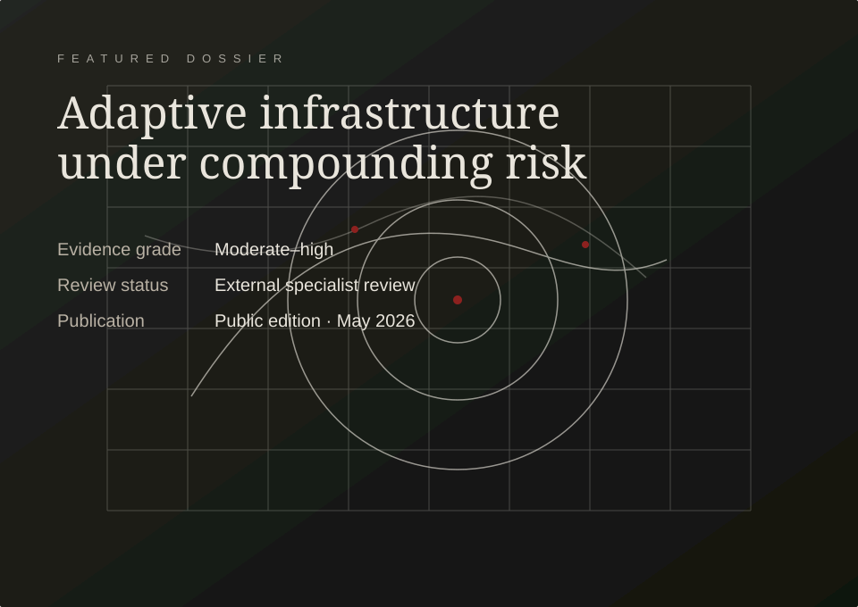

Independent systems intelligence · public edition 2026
Evidence for institutions navigating complex transitions.
Meridian publishes serious, inspectable analysis across scientific, economic, technological, and planetary systems. The site is built to feel editorial, calm, and exact rather than decorative.
Research posture
Built like a journal. Written like a briefing desk. Structured like an observatory.
The redesign replaces oversized spectacle with calibrated hierarchy: compact titles, clear metadata, strong tables, and editorial surfaces that can carry technical density.

Latest analysis
Recent publications with visible evidence posture.
Each item is presented with publication type, date, desk, review status, and confidence language so the archive reads like an institute, not a marketing blog.
Infrastructure exposure and institutional response capacity
Comparative analysis of adaptation planning, fiscal exposure, and network dependency.
Evidence grade
Procurement rules for sovereign AI infrastructure
Auditability clauses, validation rights, and escalation thresholds for public systems.
Evidence grade
Urban heat, labour productivity, and municipal adaptation budgets
Field synthesis on budget timing and heat exposure across essential services.
Evidence grade
Research themes
Disciplined inquiry across connected systems.
Programmes are designed around real institutional decision pressure: infrastructure, health systems, industrial capacity, and model governance.
Climate adaptation and infrastructure
Stress-testing the networks that keep cities, ports, power, and public services operating.
Computational biology and public health
Tracking consequences of automated discovery pipelines and predictive health systems.
Industrial policy and critical supply
Mapping constraints across energy materials, food systems, and strategic manufacturing.
AI governance and measurement
Evaluation frameworks for high-impact models, frontier institutions, and public-sector adoption.
Current intelligence ledger
Priority questions under active review.
A compact operational surface for signals, confidence levels, and next editorial actions.
Dossier system
Long-form reports that stay calm under technical density.
Modular evidence panels, tables, annotations, charts, and cross-reference blocks keep complex work readable without making it look theatrical.
Meridian Dossier 04
Infrastructure exposure and institutional response capacity
Comparative analysis · Public edition · May 2026
Data room
Research surfaces with metadata, not marketing gloss.
Release notes, data appendices, correction histories, and reproducibility statements are treated as first-class editorial objects.
Coastal corridor infrastructure exposure model
Versioned assumptions, sector weights, review notes, and source classification.
Procurement language audit: public AI systems
Clause taxonomy for auditability, escalation rights, and validation thresholds.
Battery mineral flow exposure index
Regional import dependency signals and uncertainty notes for strategic planners.
Observatory
Signals tracked by the Meridian desk.
The observatory is a static dashboard style for indicators and editorial signal tracking. It remains GitHub Pages friendly while still feeling operational.
| Signal | Trend | Confidence |
|---|---|---|
| Grid interconnection queue delays | Rising | Medium |
| Climate-linked municipal credit disclosures | Rising | High |
| Public-sector model assurance rules | Fragmented | Medium |
| Water stress and agricultural contract revisions | Uneven | Moderate |
Editorial principle
Serious design does not make research look expensive. It makes judgement, uncertainty, and evidence easier to inspect.
Meridian editorial standard
Briefing list
Receive quarterly research notes and public dossiers.
The form uses a static mail action, so it remains compatible with GitHub Pages. Replace the address in the HTML with your real inbox.